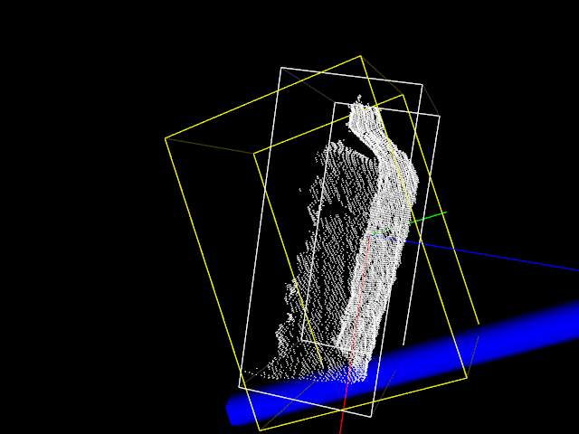

3D物体包容盒¶
使用pcl::MomentOfInertiaEstimation类来获取基于偏心率和惯性矩的描述符。该类还允许提取云的轴对齐和定向的边界框。但是提取的OBB并非最小可能的边界框。
代码实现¶
创建文件：moment_of_inertia.cpp
准备资源：./data/milk_color.pcd
执行命令：./moment_of_inertia ./data/milk_color.pcd
#include <vector>
#include <thread>
#include <pcl/features/moment_of_inertia_estimation.h>
#include <pcl/io/pcd_io.h>
#include <pcl/point_types.h>
#include <pcl/visualization/cloud_viewer.h>
using namespace std::chrono_literals;
int main (int argc, char** argv)
{
if (argc != 2)
return (0);
pcl::PointCloud<pcl::PointXYZ>::Ptr cloud (new pcl::PointCloud<pcl::PointXYZ> ());
if (pcl::io::loadPCDFile (argv[1], *cloud) == -1)
return (-1);
// 创建惯性矩估算对象，设置输入点云，并进行计算
pcl::MomentOfInertiaEstimation <pcl::PointXYZ> feature_extractor;
feature_extractor.setInputCloud (cloud);
feature_extractor.compute ();
std::vector <float> moment_of_inertia;
std::vector <float> eccentricity;
pcl::PointXYZ min_point_AABB;
pcl::PointXYZ max_point_AABB;
pcl::PointXYZ min_point_OBB;
pcl::PointXYZ max_point_OBB;
pcl::PointXYZ position_OBB;
Eigen::Matrix3f rotational_matrix_OBB;
float major_value, middle_value, minor_value;
Eigen::Vector3f major_vector, middle_vector, minor_vector;
Eigen::Vector3f mass_center;
// 获取惯性矩
feature_extractor.getMomentOfInertia (moment_of_inertia);
// 获取离心率
feature_extractor.getEccentricity (eccentricity);
// 获取AABB盒子
feature_extractor.getAABB (min_point_AABB, max_point_AABB);
// 获取OBB盒子
feature_extractor.getOBB (min_point_OBB, max_point_OBB, position_OBB, rotational_matrix_OBB);
feature_extractor.getEigenValues (major_value, middle_value, minor_value);
// 获取主轴major_vector，中轴middle_vector，辅助轴minor_vector
feature_extractor.getEigenVectors (major_vector, middle_vector, minor_vector);
// 获取质心
feature_extractor.getMassCenter (mass_center);
pcl::visualization::PCLVisualizer::Ptr viewer (new pcl::visualization::PCLVisualizer ("3D Viewer"));
viewer->setBackgroundColor (0, 0, 0);
viewer->addCoordinateSystem (1.0);
viewer->initCameraParameters ();
viewer->addPointCloud<pcl::PointXYZ> (cloud, "sample cloud");
// 添加AABB包容盒
viewer->addCube (min_point_AABB.x, max_point_AABB.x, min_point_AABB.y, max_point_AABB.y, min_point_AABB.z, max_point_AABB.z, 1.0, 1.0, 0.0, "AABB");
viewer->setShapeRenderingProperties(pcl::visualization::PCL_VISUALIZER_REPRESENTATION, pcl::visualization::PCL_VISUALIZER_REPRESENTATION_WIREFRAME, "AABB");
// 添加OBB包容盒
Eigen::Vector3f position (position_OBB.x, position_OBB.y, position_OBB.z);
Eigen::Quaternionf quat (rotational_matrix_OBB);
// position：中心位置
// quat：旋转矩阵
// max_point_OBB.x - min_point_OBB.x 宽度
// max_point_OBB.y - min_point_OBB.y 高度
// max_point_OBB.z - min_point_OBB.z 深度
viewer->addCube (position, quat, max_point_OBB.x - min_point_OBB.x, max_point_OBB.y - min_point_OBB.y, max_point_OBB.z - min_point_OBB.z, "OBB");
viewer->setShapeRenderingProperties(pcl::visualization::PCL_VISUALIZER_REPRESENTATION, pcl::visualization::PCL_VISUALIZER_REPRESENTATION_WIREFRAME, "OBB");
pcl::PointXYZ center (mass_center (0), mass_center (1), mass_center (2));
pcl::PointXYZ x_axis (major_vector (0) + mass_center (0), major_vector (1) + mass_center (1), major_vector (2) + mass_center (2));
pcl::PointXYZ y_axis (middle_vector (0) + mass_center (0), middle_vector (1) + mass_center (1), middle_vector (2) + mass_center (2));
pcl::PointXYZ z_axis (minor_vector (0) + mass_center (0), minor_vector (1) + mass_center (1), minor_vector (2) + mass_center (2));
viewer->addLine (center, x_axis, 1.0f, 0.0f, 0.0f, "major eigen vector");
viewer->addLine (center, y_axis, 0.0f, 1.0f, 0.0f, "middle eigen vector");
viewer->addLine (center, z_axis, 0.0f, 0.0f, 1.0f, "minor eigen vector");
while(!viewer->wasStopped())
{
viewer->spinOnce (100);
std::this_thread::sleep_for(100ms);
}
return (0);
}
实现效果¶
黄色立方体为AABB包容盒，白色立方体为OBB包容盒

原理简述¶
包围体（包容盒）是一个简单的几何空间，里面包含着复杂形状的物体。为物体添加包围体的目的是快速的进行碰撞检测或者进行精确的碰撞检测之前进行过滤（即当包围体碰撞，才进行精确碰撞检测和处理）。包围体类型包括球体、轴对齐包围盒（AABB）、有向包围盒（OBB）、8-DOP以及凸壳（CONVEX HULL）。
常见包容盒（ Bounding Volumes）分类：
- 包容球：SPHERE 用球体包围整个几何体，用于相交测试很方便，但是其紧密型差，周围空隙较大，当物体变形后，包围球需要重新计算。当对象进行旋转运动时，包围球不需要做任何更新，这是包围球的优势，即当几何对象频繁进行旋转运动时，使用包围球效率较高。
- AABB包容盒：Axially Aligned Bounding Box，3D环境下的AABB盒即一个六面体，每个边都平行于一个坐标平面，较简单，但紧密性较差，当物体旋转、形变之后需要对AABB进行更新。本身的长宽高根据物体大小而定。
- OBB包容盒：Oriented Bounding Box，此方法紧密型较好，可以降低参与相交测试的包容盒数目，因此性能要优于AABB和包容球。当物体发生旋转，仅需对OBB进行相同的旋转即可，但是当物体形变后，更新OBB的代价较大，故不适用那些软体的对象。

如上图所示，还有K-DOP，CONVEX HULL等包容盒，越靠右，包容效果好、越紧密。但是检测速度更慢，也更消耗内存资源。